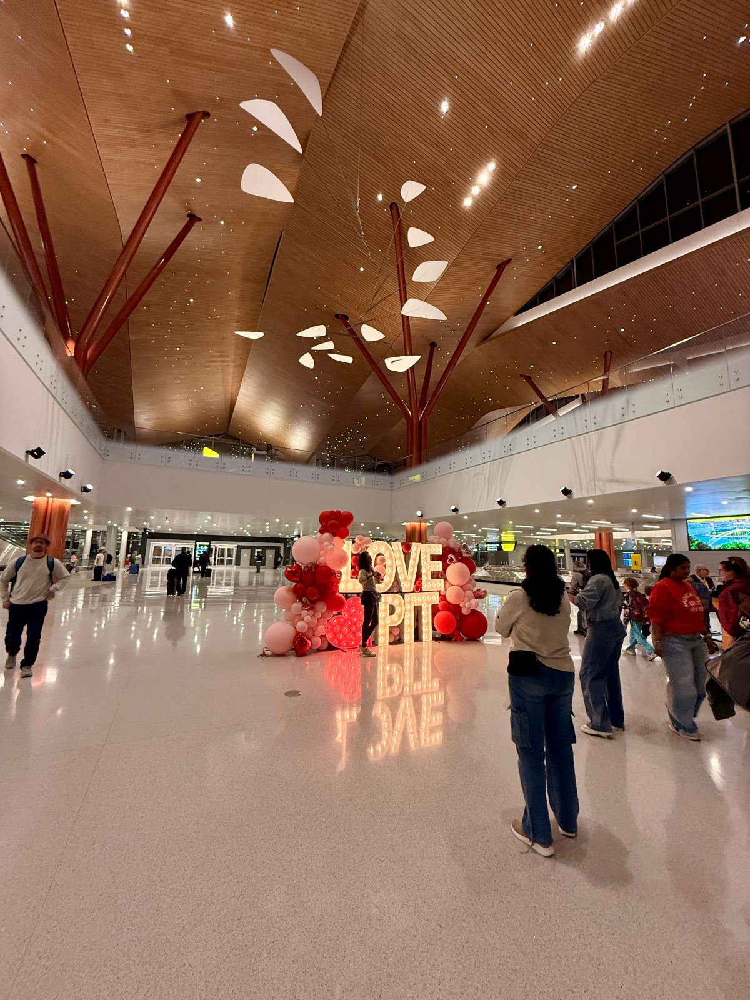

Flying home from San Francisco into Pittsburgh carries its own emotional cadence—a shift in light, landscape, and pace. With the opening of the new PIT terminal, that transition feels more intentional, more grounded, and unmistakably connected to the region it serves.

After years of bi-coastal travel, stepping off a plane becomes its own ritual—a moment where one life pauses and another resumes. This time, arriving from San Francisco into Pittsburgh felt different. The city has a new front door, and it changes the rhythm of coming home.
(And yes, we always clarify: Pittsburgh with an h—because out here in the Bay Area, there's a Pittsburg without one, and the distinction matters when you're booking flights home to Pennsylvania.)
Pittsburgh International Airport's newly opened terminal is the centerpiece of a $1.7 billion modernization program designed to reshape how travelers arrive, gather, and move through space. It's warm, bright, and rooted in the landscapes of Western Pennsylvania—a place built not just for efficiency, but for welcome.
A Terminal Designed for the People Who Use It
The original PIT terminal was built for a different era—one centered around a single airline hub. The new terminal shifts intentionally toward an origin-and-destination model, reflecting the reality that most travelers begin or end their journey in Pittsburgh rather than connect through it.
- Streamlined arrival and departure with a three-level access bridge.
- Natural light pouring through expansive glass walls.
- Warm materials—wood, steel, and stone—inspired by the region's forests and rivers.
- Human-scaled design that prioritizes clarity and calm.
Architecture That Reflects Western Pennsylvania
The design team drew inspiration from the landscapes that define the region: rolling hills, wooded valleys, steel heritage, and the soft, shifting light of Appalachian skies.
- Wooden ceiling panels that echo forest canopies.
- Branch-like steel supports that feel almost sculptural.
- Glass walls that frame the surrounding terrain like a landscape painting.
It's architecture that doesn't shout; it welcomes.
The Emotional Rhythm of Arrival
For anyone living between coasts, the experience of arrival matters. It shapes the transition between worlds—from the Pacific's cool fog to the grounded warmth of Western Pennsylvania.
Walking through the new terminal, there's a sense of exhale. The materials soften the edges of travel fatigue. The light feels familiar. The space feels intentional. It's a reminder that travel isn't just movement—it's recalibration.